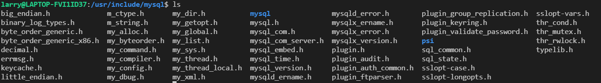

C/C++ mysql client
C api
- 直接使用以下语句安装c api的头文件和库文件
sudo apt-get install libmysqlclient-dev
mysql一些位置
/usr/bin 客户端程序和脚本
/usr/sbin mysqld 服务器
/var/lib/mysql 日志文件，数据库 ［重点要知道这个］
/usr/share/doc/packages 文档
/usr/include/mysql 包含( 头) 文件
/usr/lib/mysql 库
/usr/share/mysql 错误消息和字符集文件
/usr/share/sql-bench 基准程序
快速查找包, 使用apt-file
sudo apt-get install apt-file
sudo apt-file update
sudo apt-file search libmysqlclient.so
libmysqlclient-dev: /usr/lib/x86_64-linux-gnu/libmysqlclient.so
g++内部有库文件和头文件的查询路径, 一般包括/usr/include /usr/local/include, /usr/lib /usr/local/lib。注意该路径下的所有文件都会被搜索在ubuntu系统中使用apt-get安装, 自动将头文件安装到/usr/include目录中, 库文件安装到到/usr/lib中

简单使用
#include <mysql.h>
#include <stdio.h>
#include <stdlib.h>
int main(int argc, char **argv)
{
MYSQL *con = mysql_init(NULL);
if (con == NULL)
{
fprintf(stderr, "%s\n", mysql_error(con));
exit(1);
}
if (mysql_real_connect(con, "localhost", "root", "root_passwd",
NULL, 0, NULL, 0) == NULL)
{
fprintf(stderr, "%s\n", mysql_error(con));
mysql_close(con);
exit(1);
}
if (mysql_query(con, "CREATE DATABASE testdb"))
{
fprintf(stderr, "%s\n", mysql_error(con));
mysql_close(con);
exit(1);
}
if (mysql_query(con, "SELECT * FROM cars"))
{
finish_with_error(con);
}
MYSQL_RES *result = mysql_store_result(con); /// 存储结果(以上"SELECT * FROM cars"的结果)
if (result == NULL)
{
finish_with_error(con);
}
int num_fields = mysql_num_fields(result);
MYSQL_ROW row;
while ((row = mysql_fetch_row(result)))
{
for(int i = 0; i < num_fields; i++)
{
printf("%s ", row[i] ? row[i] : "NULL");
}
printf("\n");
}
mysql_free_result(result);
mysql_close(con);
exit(0);
}- 具体可以自己参考相关文档
https://zetcode.com/db/mysqlc/
C++ api
同上, 可以通过一行命令安装头文件和库文件
sudo apt-get install libmysqlcppconn-dev
find /usr -name *cppconn* # 查找头文件和库文件安装的路径也可以用源码编译, 虽然比较麻烦, 但可以根据当前系统编译可执行文件, 避免出现不适配的情况(总所周知, 可能linux系统一升级, 很多之前编译的文件就可能用不了了)
最好将自己编译的头文件放到/usr/local/include, 库文件放到/usr/local/lib。
简单使用
/* Standard C++ includes */
#include <stdlib.h>
#include <iostream>
/*
Include directly the different
headers from cppconn/ and mysql_driver.h + mysql_util.h
(and mysql_connection.h). This will reduce your build time!
*/
#include "mysql_connection.h"
#include <cppconn/driver.h>
#include <cppconn/exception.h>
#include <cppconn/resultset.h>
#include <cppconn/statement.h>
#include <cppconn/prepared_statement.h>
using namespace std;
int main(void)
{
cout << endl;
cout << "Let's have MySQL count from 10 to 1..." << endl;
try {
sql::Driver *driver;
sql::Connection *con;
sql::Statement *stmt;
sql::ResultSet *res;
sql::PreparedStatement *pstmt;
/* Create a connection */
driver = get_driver_instance();
con = driver->connect("tcp://127.0.0.1:3306", "root", "root");
/* Connect to the MySQL test database */
con->setSchema("test");
stmt = con->createStatement();
stmt->execute("DROP TABLE IF EXISTS test");
stmt->execute("CREATE TABLE test(id INT)");
delete stmt;
/* '?' is the supported placeholder syntax */
pstmt = con->prepareStatement("INSERT INTO test(id) VALUES (?)");
for (int i = 1; i <= 10; i++) {
pstmt->setInt(1, i);
pstmt->executeUpdate();
}
delete pstmt;
/* Select in ascending order */
pstmt = con->prepareStatement("SELECT id FROM test ORDER BY id ASC");
res = pstmt->executeQuery();
/* Fetch in reverse = descending order! */
res->afterLast();
while (res->previous())
cout << "\t... MySQL counts: " << res->getInt("id") << endl;
delete res;
delete pstmt;
delete con;
} catch (sql::SQLException &e) {
cout << "# ERR: SQLException in " << __FILE__;
cout << "(" << __FUNCTION__ << ") on line " »
<< __LINE__ << endl;
cout << "# ERR: " << e.what();
cout << " (MySQL error code: " << e.getErrorCode();
cout << ", SQLState: " << e.getSQLState() << »
" )" << endl;
}
cout << endl;
return EXIT_SUCCESS;
}数据库连接池
数据库连接池与线程池, 内存池类似。本身是一个数据结构, 维护指定数量的数据库连接。
- 初始化数据库连接池, 会用链表或数组创建指定数量的数据库连接。数据库连接池对象是单例。
- 外界可以申请获得连接, 也可以把用完的连接归还。
- 操作共享变量(数据库连接), 需要上锁。
mysql_connection.h
#ifndef _MYSQL_CONNECTION_
#define _MYSQL_CONNECTION_
// STL
#include <iostream>
#include <string>
#include <list>
#include <memory>
#include <functional>
/// mysql driver
#include <mysql_driver.h>
#include <mysql_connection.h>
#include <cppconn/driver.h>
#include <cppconn/statement.h>
#include <cppconn/prepared_statement.h>
#include <cppconn/resultset.h>
#include <exception>
#include <mutex>
using namespace sql;
using delFunc = std::function<void(Connection*)>;
class ConnectionPool {
public:
/// static 单例模式, 这样通过类名即可以调用getInstance获取对象
static ConnectionPool* getInstance();
// 获得一条连接, ->这里声明函数返回值为std::shared_ptr<Connection>
auto getConnect() -> std::shared_ptr<Connection>;
// 归还连接
auto retConnect(std::shared_ptr<Connection>& ret) -> void;
// get size
auto getPoolSize() -> int;
~ConnectionPool();
private:
/// 构造ConnectionPool
ConnectionPool(std::string name, std::string pwd, std::string nurl, int maxSize);
/// 初始化连接池
auto initConnectPool(int initialSize) -> void;
/// 销毁连接池
auto destroyPool() -> void;
/// 销毁一个连接
auto destroyOneConn() -> void;
/// 扩大数据库连接池
auto expandPool(int size) -> void;
auto reducePool(int size) -> void;
/// 增加连接
auto addConn(int size)-> void;
std::string username;
std::string password;
std::string url;
int poolSize;
/// 存放连接, 用std::list链表
std::list<std::shared_ptr<Connection>> conlist;
/// static维护的自身对象
static ConnectionPool* pool; // 连接池对象, static
std::mutex lock;
Driver* driver; // mysql driver, 来自<cppconn/driver.h>
}
#endifmysql_connection.cpp
#include <cstdio>
#include <cstdlib>
#include <cassert>
#include "mysql_connect.h"
/// 初始化 static对象 ConnectionPool::pool
ConnectionPool* ConnectionPool::pool = nullptr;
/// 构造函数, 直接在参数中就根据形参name, pwd等初始化了username, password
ConnectionPool::ConnectionPool(std::string name, std::string pwd,
username(name), password(pwd), url(nurl), poolSize(maxSize))
{
/// mysql驱动, 来自cppconn/driver.h
driver = get_driver_instance();
initConnectionPool(poolSize/2);
}
ConnectionPool::~ConnectionPool() {
/// 析构线程池
destroyPool();
}
/// 线程池大小
Connection::getPoolSize() {
return conlist.size();
}
/// 向连接池中增加size的连接
int
ConnectionPool::addConn(int size)
{
/// 向
for (int i = 0; i < size; i ++) {
// 创建连接, 调用driver->connect
Connection* conn = driver->connect(url, usrname, password);
/// shared_ptr维护连接对象conn, 并加入析构函数
std::shared_ptr<Connection> sp(conn,
[](Connection* conn) {
delete conn;
});
/// 连接加入到connList中
conList.push_back(std::move(sp));
}
}
/// 初始化连接池, 预先加入指定大小的连接
void
ConnectionPool::initConnectionPool(int initialSize) {
/// 初始化连接池, 向里面增加initialSize的连接
std::lock_guard<std::mutex> locker(lock);
addConn(initialSize);
}
/// 销毁连接池front位置的连接
void
ConnectionPool::destoryOneConn() {
/// 拿出头部连接
std::shared_ptr<Connection>&& sp = std::move(conList.front());
sp->close(); // Connection调用close()
--poolsize;
}
/// 只是销毁连接池的所有连接. 连接池没有销毁
void
ConnectionPool::destroyPool() {
/// 对conList连接池的所有连接, 执行关闭
for (auto& conn : conList) {
/// 拿出连接, 执行close()
std::shared_ptr<Connection>&& sp = std::move(conList.front());
sp->close();
--poolsize;
}
}
/// 从连接池中移除大小为size的连接
void
ConnectionPool::reducePool(int size)
{
std::lock_guard<std::mutex> locker(lock);
if (size > poolsize)
return ;
for (int i = 0; i < size; i++) {
destroyOneConn();
}
poolSize -= size;
}
/// 得到一个ConnectionPool连接池对象
/// 对象在堆上分配内存, 指针pool是static的(在静态区的指针)
ConnectionPool*
ConnectionPool::getInstance() {
if (pool == nullptr) {
/// username(name), password(pwd), url(nurl), poolSize(maxSize)
pool = new ConnectionPool("root", "root", "tcp://127.0.0.1:3306", 40);
}
return pool;
}
// 从conList中得到一个连接
std::shared_ptr<Connection>
ConnectionPool::getConnect()
{
std::lock_guard<std::mutex> locker(lock);
std::shared_ptr<Connection> sp = conList.front();
conList.pop_front(); // 注意移出conList
return sp;
}
// 归还连接, conList加入归还的连接
void
ConnectionPool::retConnect(std::shared_ptr<Connection>& ret) {
std::lock_guard<std::mutex> locker(lock);
conList.push_back(ret);
}测试
#include <cstdio>
#include <cstdlib>
#include <cassert>
#include <mysql_connection.h>
#include <unistd.h>
/// getInstance()是static静态方法, 返回一个数据库连接池对象指针
ConnectionsPool* pool = ConectionPool::getInstance();
int main(int argc, char* argv[]) {
std::shared_ptr<Connection> con;
Statement* state;
ResultSet* result;
/// 获得一个数据库连接
con = pool->getConnect();
state = con->createStatement();
// 使用数据库
state->execute("use mydb");
// 查询语句
result = state->executeQuery("select * from user;");
while(result->next()) {
///int id = result->getInt("uid");
std::string name = result->getString("username");
std::cout << " name:" << name << std::endl;
}
sleep(2);
pool->retConnect(conn); // 归还连接
std::cout << pool->getPoolSize() << std::endl;
sleep(2);
return EXIT_SUCCESS;
}